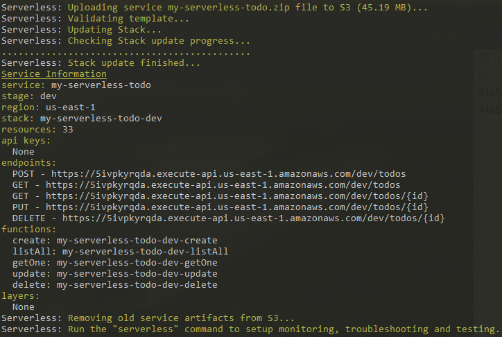

This article is to recap the action piece when I preparing for the AWS Solution Architect Associate Exam - A simple todo app.
There are several Frameworks to get started with AWS services, including Serverless Framework, AWS CloudFormation, AWS The Serverless Application Model(SAM), ZAPPA, Claudia.js and Terraform. I have chosen Serverless Framework only because it is the first tool that I am exposed to back in June.
Serverless Framework is installed via NPM. Open a command prompt and execute the following command.
npm install -g serverless
Create a new nodejs project using following command.
sls create --template aws-nodejs --path myServerlessTodo
"sls" is short name for Serverless Framework. This will create a project with a sample Node based project.
This step requires that you have AWS CLI installed and AWS account created. Here are the links to get started.
Take note of your AWS Account Access Key and Secret Key in somewhere secure, we will need them to connect with our project.
Start the connection using AWS configure at the project root command prompt, it will walk you through adding your AWS
Access Key and Secret Key.
Now the infrastructure is hook up and read for the project.
Open the serverless.yml file and delete the default content. Following is the break down fo main components of the serverless.yml that I use.
service: serverless-blog
This is the name of the project.
provider:
name: aws
runtime: nodejs10.x
stage: dev
region: us-east-1
iamRoleStatements:
- Effect: "Allow"
Action:
- dynamodb:DescribeTable
- dynamodb:Query
- dynamodb:Scan
- dynamodb:GetItem
- dynamodb:PutItem
- dynamodb:UpdateItem
- dynamodb:DeleteItem
Resource: "arn:aws:dynamodb:us-east-1:*:*"
The provider block defines provider and related global settings. In this project, the provider is AWS. IAM role statements are defined in "iamRoleStatements". Here the DynamoDB can be accessed in this project.
resources:
Resources:
TodosDynamoDbTable:
Type: 'AWS::DynamoDB::Table'
DeletionPolicy: Retain
Properties:
AttributeDefinitions:
-
AttributeName: id
AttributeType: S
KeySchema:
-
AttributeName: id
KeyType: HASH
ProvisionedThroughput:
ReadCapacityUnits: 1
WriteCapacityUnits: 1
TableName: 'todos'
This is where AWS resources are defined that will be created by Serverless Framework such as IAM roles, S3 Buckers or AWS Databases. In this todo app, only a DynamoDbTable is created with table name as "todos'.
functions:
create:
handler: functions/create.processEvent
events:
- http:
path: todos
method: post
listAll:
handler: functions/list.processEvent
events:
- http:
path: todos
method: get
getOne:
handler: functions/get.processEvent
events:
- http:
path: todos/{id}
method: get
update:
handler: functions/update.processEvent
events:
- http:
path: todos/{id}
method: put
delete:
handler: functions/delete.processEvent
events:
- http:
path: todos/{id}
method: delete
This is where Lambda functions are defined. There are five functions in this project: create, listAll, getOne, update and delete. Serverless use "handler' to point to the location of each function. Each function is triggered whenever there is an http event.
We are done with serverless.yml file, next is to write these five functions.
I deleted the existing handler.js default file where functions are located. Instead I created a functions folder
where each function live in their respective files.
const AWS = require("aws-sdk")
const uuid = require("uuid")
const { success, failure } = require("./response-helper")
const to = require('await-to-js').default
const dynamoDb = new AWS.DynamoDB.DocumentClient()
module.exports = {
processEvent: async (event) => {
const data = JSON.parse(event.body)
const databaseParameters = {
TableName: "todos",
Item: {
id: uuid.v1(),
content: data.content,
createdAt: Date.now()
}
}
let [ error ] = await to(dynamoDb.put(databaseParameters).promise())
if(error) {
console.log(error)
return failure({ status: false })
}
return success(databaseParameters.Item)
}
}
const AWS = require("aws-sdk");
const dynamoDb = new AWS.DynamoDB.DocumentClient({apiVersion:'2012-08-10'})
const to = require("await-to-js").default
const { success, failure } = require("./response-helper")
module.exports = {
processEvent: async(event)=>{
const databaseParameters ={
TableName: "todos",
Key: {
id: event.pathParameters.id
}
}
let [ error ] = await to(dynamoDb.delete(databaseParameters).promise())
if(error){
console.log(error)
return failure({status:false})
}
return success({status: true})
}
}
const AWS = require("aws-sdk");
const dynamoDb = new AWS.DynamoDB.DocumentClient({apiVersion:'2012-08-10'});
const to = require("await-to-js").default
const { success, failure } = require("./response-helper")
module.exports = {
processEvent:async (event)=> {
const databaseParameters = {
TableName : "todos",
Key: {
id: event.pathParameters.id
}
};
let [ error, result ] = await to(dynamoDb.get(databaseParameters).promise())
if(error){
console.log(error)
return failure({status: false})
}
return success(result.Item)
}
}
const AWS = require("aws-sdk");
const dynamoDb = new AWS.DynamoDB.DocumentClient({apiVersion:'2012-08-10'});
const to = require("await-to-js").default
const { success, failure } = require("./response-helper")
module.exports = {
processEvent: async()=>{
const databaseParameters = {
TableName: "todos",
AttributesToGet: [
'id',
'content',
'createAt'
]
}
let [ error, result ] = await to(dynamoDb.scan(databaseParameters).promise())
if(error){
console.log(error)
return failure({status: false})
}
return success(result.Items)
}
}
const AWS = require("aws-sdk");
const dynamoDb = new AWS.DynamoDB.DocumentClient({apiVersion:'2012-08-10'});
const to = require("await-to-js").default
const { success, failure } = require("./response-helper")
module.exports = {
processEvent: async(event)=>{
const data = JSON.parse(event.body);
const databaseParameters = {
TableName: "todos",
Key: {
id: event.pathParameters.id
},
UpdateExpression:"Set content = :content",
ExpressionAttributeValues: {
":content": data.content || null
},
ReturnValues:"ALL_NEW"
};
let [ error ] = await to(dynamoDb.update(databaseParameters).promise())
if(error){
console.log(error)
return failure({status:false})
}
return success({ status: true })
}
}
These are the CRUD opeations for DynamoDB documentClient.Please see AWS.DynamoDB.DocumentClient for more information.
Time to see Serverless Framework's magic!
Execute sls deploy, in command line and Serverless Framework should start deploying resources as displayed below:

After deployment, go to AWS console and you can resources specified in serverless.yml created in S3 buckers, Cloudformation,
Lambda functions, DynamoDB and API Gateway.